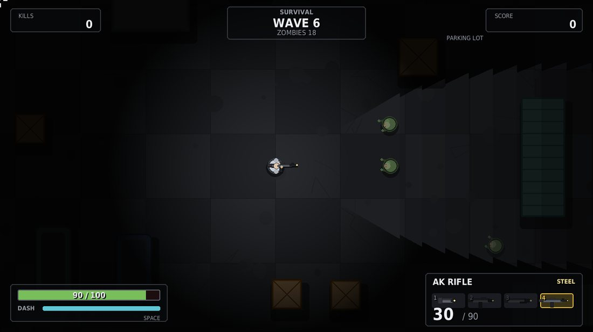
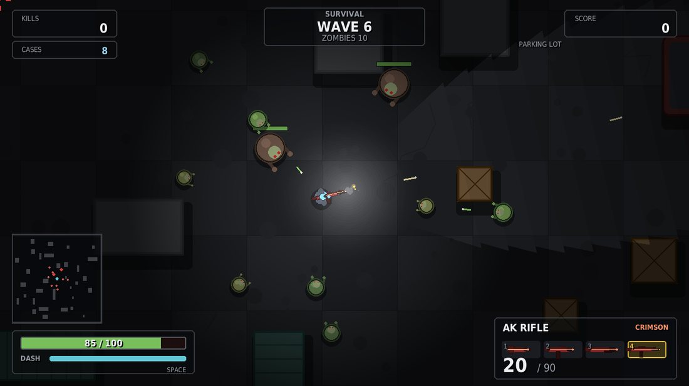
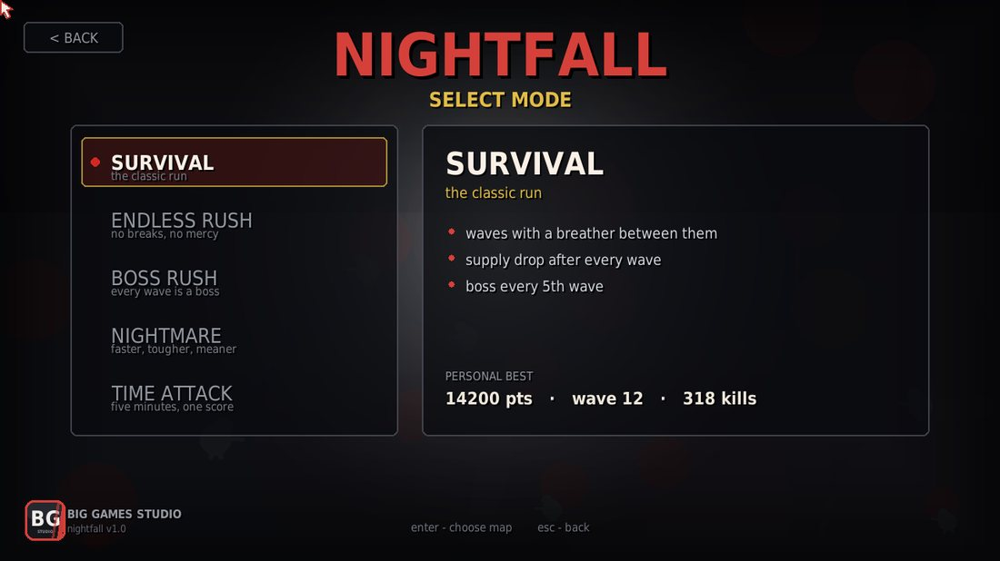
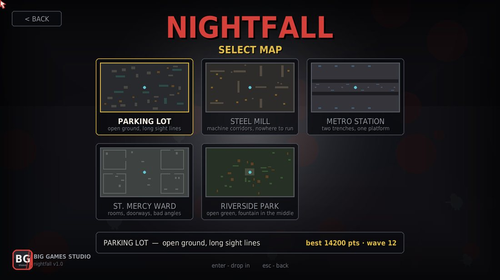
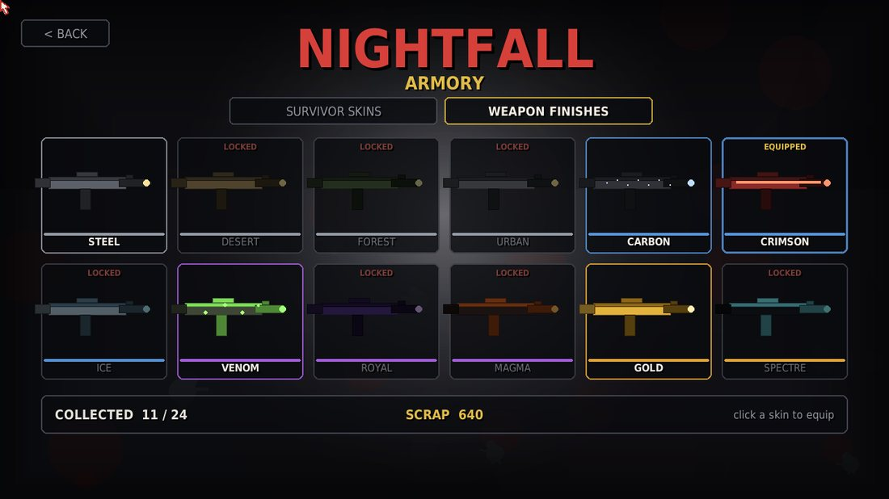
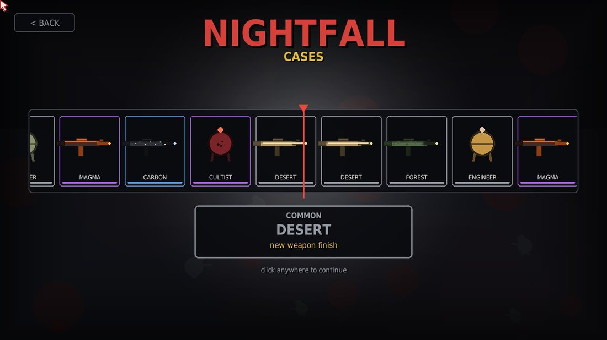
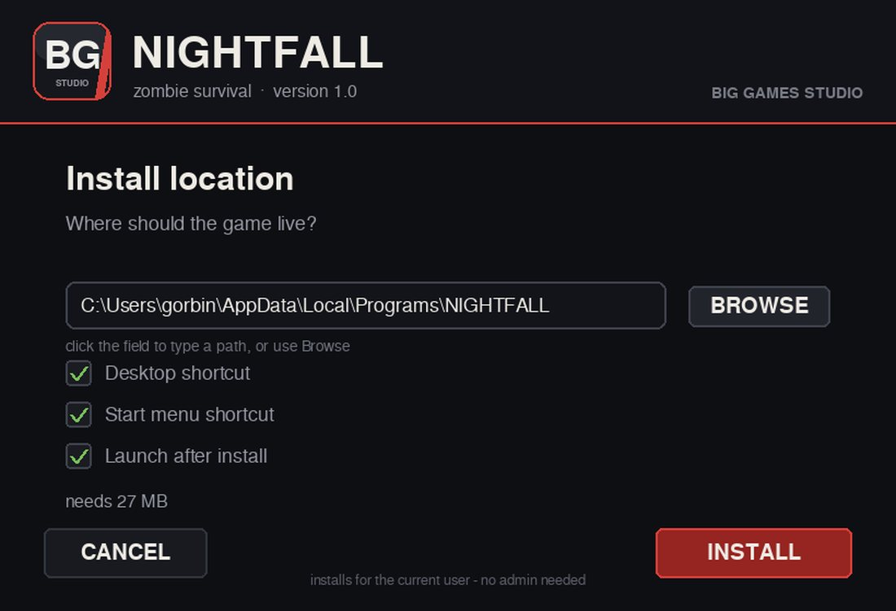

Выживание сверху вниз. Пять режимов, пять карт, четыре ствола, скины и кейсы. Фонарь — единственный свет: зомби видно только там, куда он светит.
Волны идут одна за другой, между ними — передышка и ящик с припасами. Города нет, есть пять арен: парковка, сталелитейный цех, станция метро, больничное крыло и парк у реки. Вся графика рисуется кодом, весь звук синтезируется при запуске — поэтому игра весит столько же, сколько один скриншот из современного шутера.


Волны с передышкой, дроп после каждой, босс каждую пятую.
Передышек нет. Спавн быстрее на 45%, припасы падают по таймеру.
Босс в каждой волне, мелочи вчетверо меньше, старт с дробовиком.
+25% скорости, +45% здоровья, волны в полтора раза больше, дропа меньше.
Таймер на пять минут, каждое убийство добавляет секунду, все стволы сразу.
Счёт, волна и фраги пишутся по режимам и по картам — видно, где ты реально хорош.


Открытая площадка, длинные простреливаемые линии.
Станки рядами образуют коридоры, легко попасть в клещи.
Платформа между двумя путевыми траншеями.
Комнаты с дверными проёмами, тесные углы.
Газон, фонтан в центре, палатки и живые изгороди.
Двенадцать скинов на выжившего и двенадцать финишей на оружие, четыре редкости. Кейсы падают с зомби и гарантированно каждую пятую волну. Открытие — рулетка: лента тормозит и встаёт под маркером. Дубликат превращается в скрап, за скрап берётся следующий кейс.



| система | Windows 10 или 11, 64-bit |
| место | 60 МБ на диске |
| память | 2 ГБ |
| видео | любая, игра рисует софтверно |
| управление | клавиатура и мышь |
| интернет | не нужен, аккаунта нет |
| рантайм | ничего ставить не надо — python и библиотеки внутри |
Рекорды, скины и кейсы лежат в savedata.json рядом с игрой. Скопировал папку — унёс прогресс.
Параметры → Приложения → NIGHTFALL, либо uninstall.bat в папке игры.
WASD, мышь, R — перезарядка, 1-4 — оружие, Space — рывок, F — фонарь, F11 — окно/фулскрин.